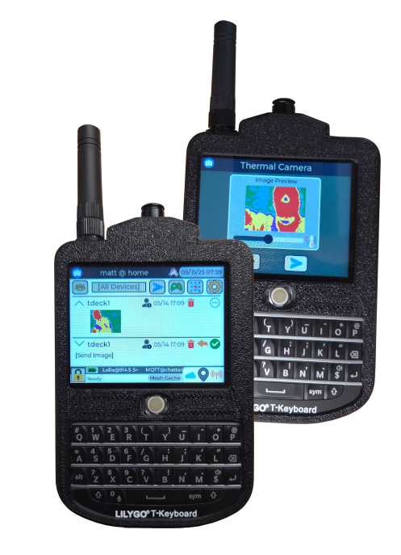
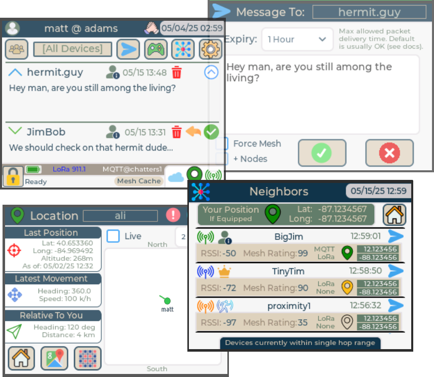

Private cluster
Trusted people only
Devices are onboarded in person by a root device. Keys are generated on the hardware. You never type a channel password into a phone.
Secure off-grid text, location, and control
Blackout CommsTM is a mesh-powered secure off-grid communication protocol and an array of easily built devices. It keeps you in contact with trusted people — your private cluster — even in a complete grid outage.

Private cluster
Devices are onboarded in person by a root device. Keys are generated on the hardware. You never type a channel password into a phone.
Async, like texting
If the other device is off or out of range, the mesh holds the packet and keeps trying for up to 24 hours. You get a signed delivery confirmation when it lands.
No phone required
Blackout Comms runs as embedded firmware on FreeRTOS or no OS. There is no app store, no phone OS, and no background leak of position to a platform.
Start here
The protocol is independent of any one radio. LoRa on the 902–928 MHz ISM band is the primary path in the US. MQTT over Wi-Fi is optional, for bridging long distances when some internet still exists.

Hands-on
Notes on LoRa antennas, amplifiers, and devices from Rokland, LilyGO, Heltec, and others. Written from the same bench that builds Blackout Comms firmware.
Separate project
An experimental positioning system that uses vision and known landmarks instead of GPS. Built for resource-constrained machines, including small autonomous vehicles.